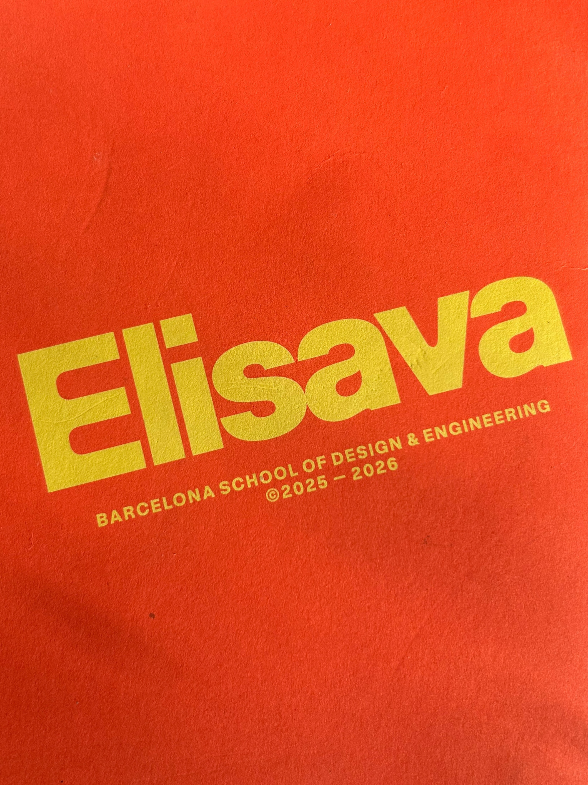
Master in Design for
Responsible AI
Futures Narrative:
How Agentic AI can
strengthen demand planning in the apparel retail industry
and improve planetary health
Read in PDF
Kiril Traykov
June 2026
I. Introduction
This futures narrative will demonstrate that a widespread transition to using
personal AI agents for shopping in the next decade (2026-2036) holds the potential to refine how
demand forecasting is done for goods in the apparel industry by unveiling new levels of granularity
with more reliability. Since the apparel industry is one of the top planetary pollutants with its
taxing production processes and global supply chains, any improvement in demand planning will
translate into lesser overproduction and environmental contamination, which will represent a
relief for our planetary health.
The path to achieve this benefit is rooted in Responsible AI innovation and
the application of Anticipatory AI ethics while steering the process. In first position, Responsible
AI innovation is needed because, as this narrative will show, the emergence of a new futures persona
(the algorithmic consumer) will predispose the creation of a new futures infrastructure tool
(the Agentic Data Consolidator) to make use of the enormous data from each personal AI agent
on consumer shopping requests. The personal AI agents and the new AI tool have to be both
designed under Responsible AI principles to be effective for their purpose, while the entire
sociotechnical environment will need Anticipatory AI ethics to govern the transformation process.
This narrative first begins by providing an overview of demand planning in apparel retail companies
and demystifies what Predictive AI means in this business function and how it has evolved.
It then pinpoints the specific methodological opportunity where agentic commerce can provide
more granular data and improve demand forecasting. The narrative then switches to developing
futures lens by introducing an anticipated new futures persona (the algorithmic consumer),
an opportunity for a new futures infrastructure tool (the Agentic Data Consolidator), and
a futures timeline for these developments with governance structure ideas. In the final part,
it translates how demand planning improvements will reflect in industry operations and
improve planetary health.
Illustration of all main agents in this futures narrative:
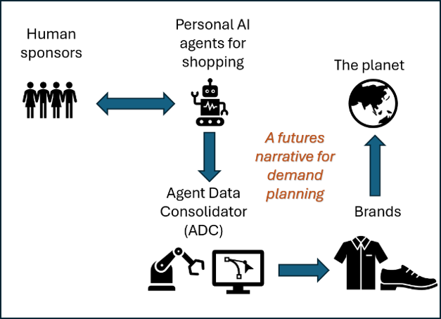
To support this futures narrative, the author is applying his professional experience from
Levi Strauss & Company (Levi’s) to illustrate certain methodologies and data practices.
The mature profile of Levi’s as a global maker of denim garments with 170+ years of history
provides useful context for situating this proposal on business processes that have undergone
extensive development and proven durable.
The futures framework developed in this narrative aims to answer the Anticipatory AI questions of:
“What will happen?” (the emergence of the algorithmic consumer),
“How can we use that?” (the creation of the
Agentic Data Consolidator to harness the data from the personal AI agents), and
“Why would we do it?”
(to improve planetary health via reduction in apparel overproduction and associated
environmental damages).
II. Key terms in the context of this paper
Apparel retail industry: collection of companies selling apparel products (clothes) with global
supply chains where materials sourcing and production is geographically far removed from the
actual consumer.
Demand planning and forecasting: Demand planning is the overall business function,
while demand forecasting is an underlying activity responsible for producing estimates for
future sales of apparel goods based on statistical analyses from past sales, pricing data, and
consumer trends and surveys.
Predictive AI in demand forecasting: combining 1st party data (company’s own data)
with 3rd party data (external data) to create a more holistic market view and expose the
computational models to diverse data sets (move away from the self-prophecy of 1st party data).
Machine learning methods are applied for big data analyses.
Agentic AI: systems that act with a degree of autonomy towards a goal. Able to plan,
make decisions, take actions, use tools, adapt to feedback.
Personal AI agent: a user-centered implementation of agentic AI, designed to run on
PCs and other digital devices.
Algorithmic consumer: A new term for the apparel consumer who interacts with brands and
marketplaces through personal AI agents, which programmatically do survey-of-the-land and
collect matching options for their “human sponsor”.
Agent Data Consolidator: An infrastructure tool in the AI ecosystem that stores and
aggregates data on consumer shopping requests from millions of personal AI agents. Provides
brands with data for the real total market demand for apparel goods.
Planetary health: The reduction in supply chain negative externalities from
improvement in apparel demand forecasting that minimizes excess production and supply.
Those negative externalities include overproduction (which uses hazardous chemicals and
environmentally contaminating processes), emissions from unnecessary raw and finished goods
shipments, inventory buildup, transfer to landfill and dumping sites, overall environmental pollution.
III. Overview of current demand planning practices in apparel retail
In the apparel retail industry, demand planning is a crucial analytical exercise
that has consequential effects across the entire supply chain of a retail company1. Once an apparel
retail company (such as Levi’s or H&M, for example) makes estimations for the demand of its products
(typically done by season), those numbers guide the entire manufacturing, shipment, inventory, and
allocation processes, i.e. the entire path from the production factory to the shelves in the stores.
Thus, having the ability to correctly forecast product demand becomes a core requirement for
maintaining a lean and efficient supply chain. Improving this forecasting ability will not only
improve the financial balance sheet of the company in question but affect the entire planetary
health in a beneficial way because the majority of those supply chains are global, massive in size,
with highly taxing to the environment operations2.
Even though every apparel retail company strives to produce forecasts as accurately as possible,
this remains a challenging task because human behavior with respect to fashion is very fickle3
with personal styles often changing because of surrounding social phenomena. In that way, demand
planning is akin to a prediction market in which the payoffs affect our planetary health - if the
forecasts overshoot actual demand, this will lead to overproduction (which uses hazardous chemicals
and environmentally contaminating processes), emissions from unnecessary transfers and shipments,
inventory buildup, potential landfill dumping, and overall environmental pollution. If, on the other
hand, the forecasts underestimate demand, this may trigger emergency production requests to supply
the missing quantities, which can throw off normal business operations and introduce noise and chaos
in the system.
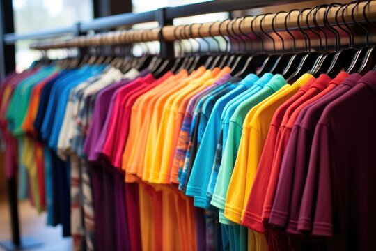
Photo credit: Adobe stock
In practice, demand planning accuracy may differ a lot by product. One study4 reported that for high-volume, stable products (e.g. straight-fit jeans, basic tees), accuracy tends to be high: 85% to 95% as large volumes smooth out random variations and demand patterns are predictable. For fresh products with weather-sensitive (seasonal) demand (e.g. summer dresses), accuracy is a little lower between 70% to 80% as there is inherent volatility in the selection choices by the consumers, while for slow-moving products with intermittent demand (e.g. belts, vests, overalls, etc), accuracy can drop to between 50% and 70%. If I may cite a KPI metric from Levi’s where ~80% of the business is from high-volume, stable jeans products5, the goal for demand planning accuracy is 92%, which would represent the high-end of demand accuracy for any apparel retail company.
Illustration of product types and demand forecast accuracy:
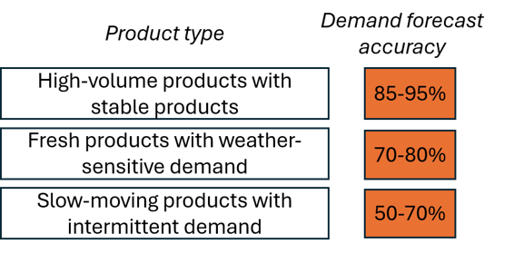
Because of this complexity, demand planning is a decision science function that is often described
as an exercise of art and science between humans and computers6. Computers enable us to run
quantitative models that use multiple regression modeling with time-series from past sales to
evaluate the weights for each product’s performance and extrapolate future sales7. To do that,
an apparel retail company would use its own (1st party) sales data, which is typically found to
be the greatest predictor. However, this methodology is a form of self-prophecy where the company
is only analyzing the universe of its own customers and planning products for the same (sometimes
monolithic) consumer group. This works quite well to bring cohesiveness and focus to the business
and marketing strategies, but from responsible innovation standpoint it is not an equitable way of
“hearing all voices” as certain consumer groups get excluded from future demand by way of the
mathematical weights coming out from the regression models. In this way, demand forecasting
from 1st party data carries inherent bias.
For example, the largest excluded group in fashion is oftentimes the “Plus” size consumer8
(despite actual demand9) because many brands only start with a limited set of offerings for
this category, the sales for which never grow in the internal data set to signal for more
demand (in this otherwise data-driven decision). So the exclusion is getting self-perpetuated
as the Plus Size consumer may find the selections too few, basic, or unsuitable, and abstain
from buying. Other excluded groups could include specialty workwear groups (e.g. workers who
need thermal clothing), LGBT groups (for whom “Pride Month” collections have turned into
political fights10, or in another example, where drag queens need stiletto shoe size 14),
disabled people, and more. Thinking from this frame, creating apparel merchandise for everyone
can be a difficult and costly process, but if there is a more reliable signal that total market
demand exists, it can become financially attractive in net-present-value for companies to adjust
their production processes.
Illustration of the self-prophecy trap and possible discriminated groups:
--------
1 Fildes, Robert; Ma, Shaohui, Kolassa, Stephan; "Retail forecasting: Research and practice", International Journal of Forecasting, vol. 38, issue 4, pp. 1283-1318, October - December, 2022.
2 Cline, Elizabeth on behalf of the Fashion Industry Charter for Climate Action’s Manufacturers Peer Action Group, "Fashion’s Supply Chain Challenge", United Nations Framework Convention on Climate Change (UNFCCC), July, 2025.
3 Blumer, Herbert, "Fashion: From Class Differentiation to Collective Selection", The Sociological Quarterly, vol. 10, no. 3, pp.275-291, Summer 1969. [this was an incredibly interesting read from the dawn of fashion as a consumer industry. The author opens with the line “This paper is an invitation to sociologists to take seriously the topic of fashion” and makes an argument for fashion as a sociological choice.]
4 Industry Editorial by Pantsar, Hannu and Norman, Craig, "Measuring forecast accuracy: The complete guide", Relex Solutions, April 2026.
5 Levi Strauss & Company, "Levi’s Annual Report 2025", page 8 “Levi’s Brand” section.
6 Myerson, Paul, "The Art and Science of Demand and Supply Chain Planning in Today's Complex Global Economy", Prouctivity Press, New York, 2023.
7 Swaminathanand, Kritika; Venkitasubramony, Rakesh, "Demand forecasting for fashion products: A systematic review", International Journal of Forecasting, vol. 40, issue 1, pp. 247-267, January - March, 2024.
8 Morales, Melissa, "The Stigmatization Of Plus-Size Bodies In The Fashion Industry", Brooklyn College Vanguard, November 2021.
9 Naidu, Deepika; Howlett, Elizabeth; Perkins, Andrew; "The bigger the better: An investigation of consumer responses to clothing retailers’ extended-sized product lines", Journal of Retailing, October 2025.
10 D’Innocenzio, Anne, "After Backlash, Target Becomes Latest Brand to Shift Pride Marketing", The New York Times, May 2023.
With the vast proliferation of data from all sorts of domains, apparel retail companies are trying to escape the self-prophecy trap in their demand planning regression models by enriching those modes with external data sets. Those external data sets can range from resident demographics of the consumers around their stores to tourist arrivals data to weather forecast data to inflation and economic data to home value prices in the area to consumer sentiment data to health spending data in the area, any data set that has localized market dimensions to bring more diversification and contextual differentiation in the computational models. This data enrichment practice has converted demand planning into a Predictive AI process (Figure 1) where machine learning techniques are now employed to handle the processing and analysis of all this disparate data.
Figure 1: Demystifying Predictive AI in demand planning
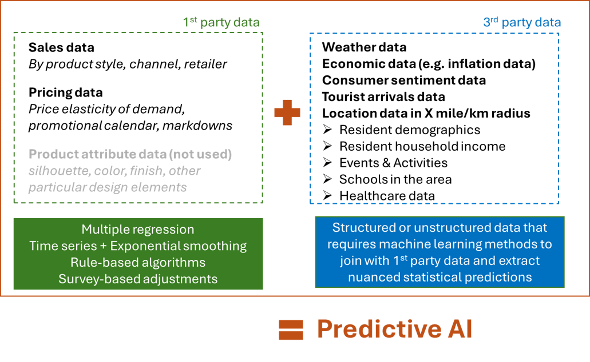
The goal in apparel retail has become to forecast demand in the context of the entire market, not only the company’s product portfolio. When demand forecasts are produced, they also have to align to the product hierarchy. Forecasts can be done at very granular levels by channel, product finish type, and even size, but demand planning teams in apparel companies often prefer to take a “middle position” and submit estimates by channel and product style (one level up from product finish) (Figure 2). The reason for this is that at the most granular level, there is randomness (in statistical sense11) that can be misleading and create outsized estimations.
Figure 2: Demand forecasting illustrated in view of product level hierarchy
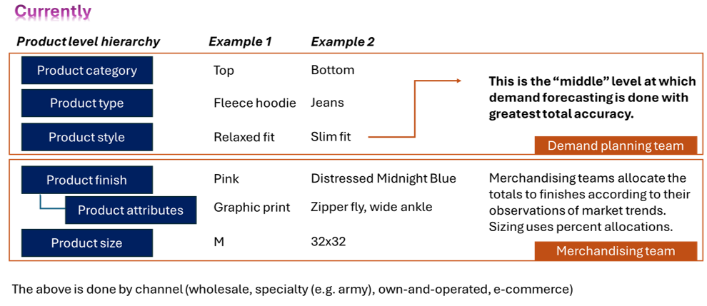
For example, if I want to do a flash mob stunt on the street and buy 20 pink hoodies for my dancers, the more reliable demand information is not that I needed hoodies in pink, an event that may not repeat next year, but that I needed hoodies during that season. If the demand planning team did the forecasting at the most granular level and produced a demand signal that next year the company needs to stock 25 more pink hoodies, this granularity will create excess supply if another creative chooses to upstage me with a flash mob requiring 30 hoodies in any other color but pink for differentiation. This excess supply will turn into unsold goods, which the company may try to flush through markdown sales or send off to the off-price market. At the end, those hoodies may very well end up in textile dumps taking decades to biodegrade. Thus, wrong mathematical methodology may add to environmental pollution for the planet. This is why, because of this reality of non-repeatable, randomly distributed events among fashion shoppers, demand planning for large apparel retail companies is more secure to be done at a middle level, that of a product style (e.g. fleece hoodie) than at a product finish one (e.g. fleece hoodie in pink).
--------
11 Ren, Shuyun; Chan, Hau-Ling; Siqin, Tana; "Demand forecasting in retail operations for fashionable products: methods, practices, and real case study", Annals of Operations Research, vol. 291, pp. 761-777, January 2019.
The central narrative in this paper will depict a futures scenario where personal AI agents would be able to supply this most-granular information with predictability, which will reflect total market demand and will in turn make demand planning estimates sharper, leading to more efficient supply chains and environmental relief for the planet (Figure 3).
Figure 3: Future scenario for demand forecasting with input from Agentic AI
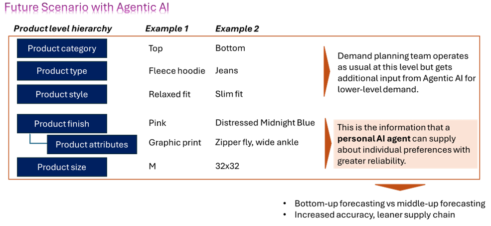
One of the merits in this art and science demand planning process is that humans still exercise considerable oversight over the estimations produced by the computers as human managers review, amend, approve, and send those estimations to the next chain of command that starts the production process. Thus, it could be argued that the current demand planning process is well-designed at the top for human oversight, but could be improved at the bottom, which is where Agentic AI can supply granular data from millions of consumers about their near-term product needs.
IV. Futures persona: the algorithmic consumer via personal AI agents
In its “State of of Fashion” 2026 annual report12, McKinsey & Company highlights that “in the years
ahead, autonomous AI shopping agents may act on their [consumers’] behalf, completing tasks from
monitoring prices to buying products”. This will signify a new era in which we might see the
emergence of a new persona: the algorithmic consumer. The Harvard Journal of Law and Technology
already recognized it as early as 2017, publishing an extensive paper13 on the subject. The
incentives behind the adoption of personal AI agents for shopping center on the premise that
such AI agents can significantly reduce search and transaction costs, help consumers overcome
biases to enable more rational and sophisticated choices, and create or strengthen buyer power.
However, the personal AI agents would not do this in a vacuum but would already have a wealth of
information about their “human sponsor”. Those personal AI agents would have access to all digital
touchpoints, history, and personal data of their human sponsor: data points such as previous
purchasing history, exact sizing information, future calendar on which events may be marked down,
“likes” on social media, style preferences, and their human sponsor’s current inventory of clothes.
Knowing the entire microcosm of the consumer would enable the personal AI agents to engage in very
targeted shopping moves, sometimes knowing far in advance what their human sponsor will need at a
future date.
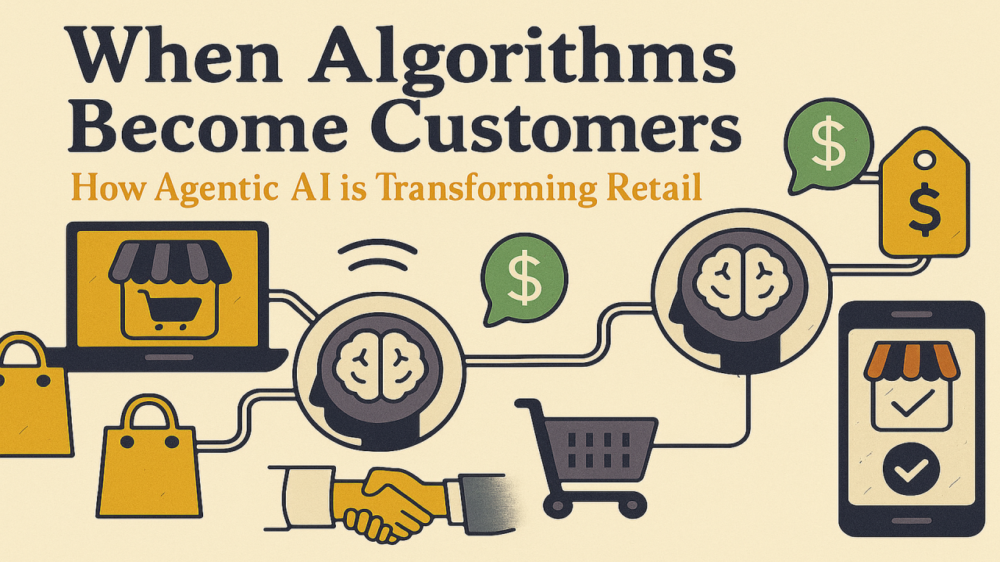
Photo credit: Jeffrey Neville on LinkedIn here
--------
12 McKinsey & Company Annual Report, "The State of Fashion 2026: When the rules change", November 2025.13 Gal, Michal; Elkin-Koren, Niva; "Algorithmic Consumers", Harvard Journal of Law & Technology, vol. 30, no. 2, Spring 2017.
Example 1: Raphael, 26 years old in Barcelona
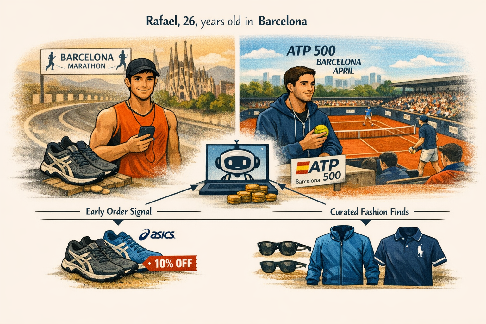
Photo credit: Image generated with Copilot, the only use of AI in this work
Rafael is a sports person. He will run in the Barcelona marathon in March and has purchased tickets
to watch the ATP 500 tennis tournament in Barcelona in April.
Rafael will need new shoes after the Barcelona marathon to start breaking them in for his next
marathon (his old ASICS ones already have 500km on them, which is the limit they were designed for).
He will also need new sunglasses for the summer. The week when he will be all day out at the ATP 500
tournament in Barcelona is predicted to be chiller than usual so he will also need a windbreaker
jacket and a nice Ralph Lauren polo shirt for a timeless look.
Raphael’s personal AI agent knows his size and style preferences as well as his budget. It has
sent a signal to ASICS and Ralph Lauren three months ahead of time. As a result, Rafael gets 10%
“early order” discount. As for the sunglasses and the windbreaker jacket, Raphael is not sure what
he wants so his personal AI agent accesses a marketplace for algorithmic shopping to find items
that match Raphael’s aesthetic and budget. Raphael will approve them and the AI agent will order them.
Example 2: Maria, 40 years old in New York
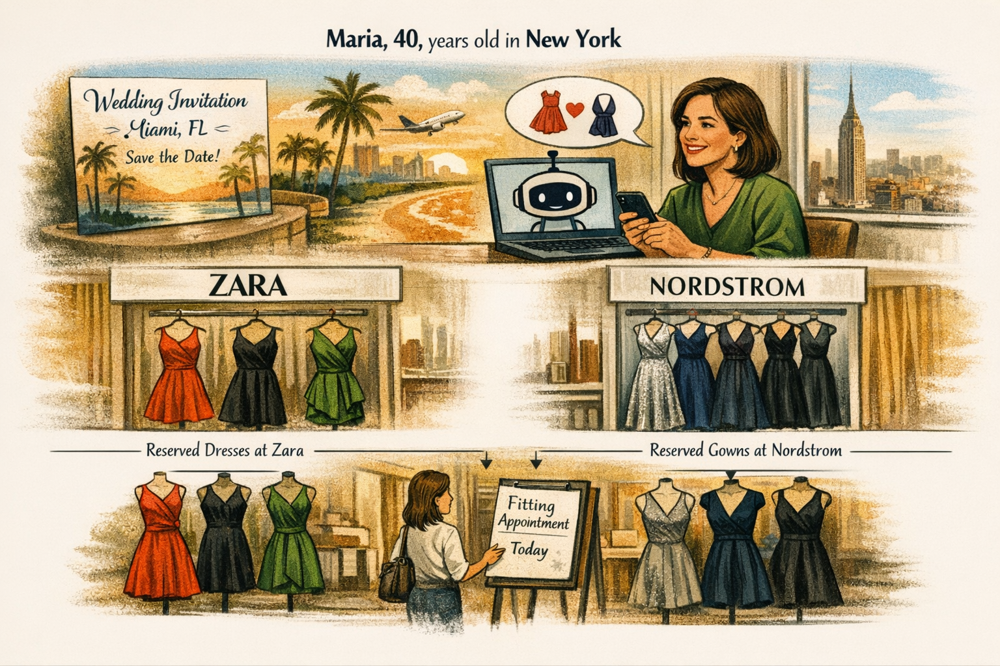
Photo credit: Image generated with Copilot, the only use of AI in this work
Maria gets a wedding invitation from one of her friends from college, who is getting married in
Miami, FL. The invitation is sent 6 months ahead of time. Maria decides that she would need a
cocktail dress and an evening gown. She wants to update her wardrobe for the occasion (plus, you
never know who you will meet at weddings!).
Because a trip to Miami, FL, will be already expensive, Maria is considering getting a cocktail
dress from Zara and an evening gown from Nordstrom. She has previously shopped for a pair like that.
Her personal AI agent sees the purchase history and has a conversation with her about what styles
she may prefer, suggesting recent likes that Maria has made on social media.
Buying a dress and a gown is more complex than other everyday items, so her personal AI agent
reserves several dresses at Zara and several gowns at Nordstrom for her at prices that are
reasonable for her wallet. Those dresses will be automatically carried to a dressing room for
Maria to try at once at the time when she comes for her shopping appointment. Her AI agent
books the appointment.
--------
These examples illustrate how easily personal AI agents may integrate with human lives and
take the initiative for apparel retail shopping. I also portrayed some tactical elements in
the design of the future shopping experience to enable them to be incrementally assistive and
act as connectors:
(1) Early purchase order is rewarded with some discount (e.g. 10%);
(2) Bookings of fitting rooms with pre-selected items can be arranged for max efficiency;
(3) Online marketplaces are set up for AI agents to browse and bid for;
Such integration with the personal AI agents opens the question how the human sponsors’ rights will be affected if AI agents will be making selections and even acting on their behalf. It is of central importance to then conduct an AI Anticipatory review for this human-computer interaction scenario (Table 1) and answer the question of “what Responsible AI properties the personal AI agent should be equipped with in this futures scenario”. The human sponsor will retain final approval (oversight) on the shopping process, but the AI agents would represent him or her on various marketplaces and brand platforms.
Table 1: Responsible AI requirements for personal AI agents for shopping
Thus, the technological horizon for the personal AI agents should be designed with the above considerations for Responsible AI to make them truly effective and prepare them for a secondary role in becoming transmitters of data for bigger purposes, such as demand planning.
V. Futures tool: the Agentic Data Consolidator
Since each personal AI agent will have information about the shopping intentions and future orders
of its human sponsor, the next logical question is how this data could be collected so that its
aggregate form can become useful for business applications such as demand planning. Furthermore,
since personal AI agents will run on a diverse set of devices (PCs, phones, tablets, watches, etc),
there is a business opportunity to capture this fragmented but collectively exhaustive data into
one central system of record. This is where I propose a tool called “Agent Data Consolidator” (ADC)
to act as enabler for that.
The ADC will be a cloud-based storage repository, a data lake, which will collect and update data
from millions of personal AI agents about their human sponsors’ near-term shopping needs at very
granular level – by product finish and size. The ADC will have an intake form, which the personal
AI agents will fill out. Every time their human sponsor mentions a shopping need, the personal AI
agent will connect to the ADC and log a shopping request (a unit of demand). On the other side,
brands can monitor all demand entries and send proposals directly to the personal AI agent, which
can take action to present them to its human sponsor or disregard them because of certain criteria.
The ADC will fundamentally run on the principle of anonymity because the essential data needed is
not who made the order, but what the order is and where it is located at postal code (zip) level.
Thus, the ADC will be disabled from taking directly the name, age, street address (it will only
take the postal (zip) code) or any personal data about the consumers, as well as any payment
information. It will, however, host the ID of the personal AI agent that will be in charge of
managing the entry. In this way, the human sponsor will not be directly traceable from the ADC
(but could be traceable through the ID of his or her personal AI agent – this is why the
Responsible AI design for the personal AI agent is of absolute importance for privacy and security).
This setup is by intentional design to prevent the ADC from becoming a surveillance tool for
individual consumers and their preferences when the only thing it should be a “surveillance tool”
of is total market demand.
So the role of the ADC is not to facilitate order fulfillment (which will still be carried out
through normal channels and occur on the brands’ point-of-sale systems), but to aggregate data
for demand planning and give brands the opportunity to surface items to the personal AI agents
that match their human sponsors’ shopping requests. Transactions will not be carried through the ADC.
An example of a shopping request that would be stored in the ADC for Rafael’s running shoes and polo shirt is presented in Table 2 below. Different apparel brands may use different product hierarchies and nomenclature to designate and describe their products, but the intake form in the ADC will be mapped to each brand’s peculiarities through an alignment and harmonization dictionary (created by AI for each brand).
Table 2: Illustration of data tables stored in ADC from personal AI agents for shopping
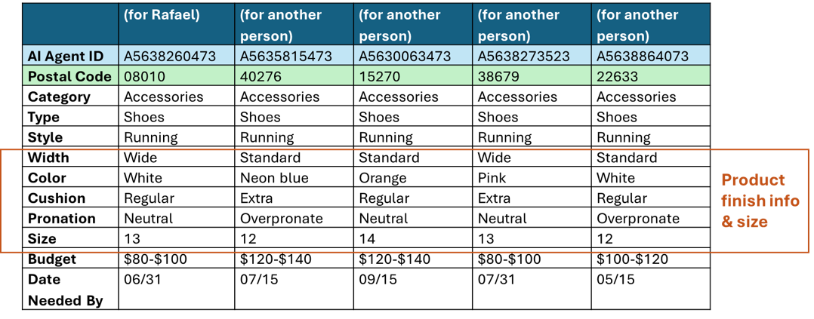
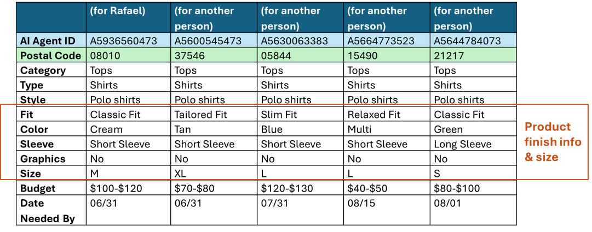
Once logged into the ADC, brands can respond to these requests (most conveniently via an API,
from IT standpoint) directly to the personal AI agents using the provided personal AI agents’ IDs.
The personal AI shopping agent can collect the brands’ responses and then present the selected options
to its human sponsor for final purchase approval.
The quality of data in the ADC will be highly dependent on the real-time updates from the personal
AI agents. To provision for that, the incoming requests will initially be logged as “open requests”
with a desirable close date after which they will get designated in one of 3 ways: “requests that
translated into orders”, “unmet demand requests”, and “cancelled requests” (Table 3). These
designations are very important because for the purposes of demand planning, the “requests that
translated into orders” and “unmet demand requests” (for new demand discovery) carry a lot more
importance on which to base actual production signals for the next seasons. The ADC will keep
those requests on permanent 24-month basis (to capture all seasons twice over for any seasonal
smoothing purposes). This data retention policy would also help manage the size of the ADC,
preventing it from becoming an ever-growing repository by putting a time limit to what will be
kept in this system of record.
The “unmet demand requests” designation would also serve as an opportunity to address product
fairness and justice for the consumer groups that were previously excluded from representation
in the demand planning process. If sufficient number of requests are made (representing some
critical mass threshold) for Plus Size clothing of a particular type, for example, this will
send a strong signal to the brands that there is actual demand, which had been hidden as a
blind spot in their rear-view mirror before. Thus, the ADC can enable more product selections
to be offered to minority groups with time.
Table 3: Status of requests in the ADC
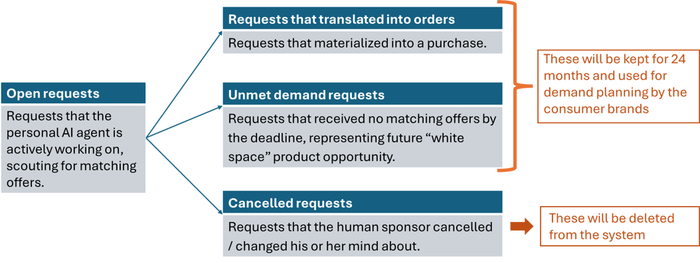
The ADC would in nature be a cloud-based, virtual infrastructure solution within the agentic
AI ecosystem. Its biggest dependency will be on the behavior of the personal AI agents, which
will be accountable to submit, update, and delete shopping requests from their human sponsors.
Those may come in very high volumes because of the frequency at which the human sponsors may
update their “wish-lists” and shopping intentions to their personal AI agents. Therefore,
this dynamic connection between the personal AI agent and the ADC will also require some
process controls in the event when a personal AI agent goes rogue or experiences a jailbreak,
as it may contaminate the ADC with fictitious requests or misleading request changes.
One subtle advantage of the ADC is that it will also serve as an implicit library for
“planned requests”, filtering out spontaneous shopping decisions that may still occur at a
point-of-sale in physical stores. Since one study found that 20-30% of apparel shopping
happens through spontaneous, impulsive decisions14, those are not a very reliable signal
for future demand planning as the same impulse may not repeat again. But requests made
through the personal AI agents carry intention, which are more useful in nature for future
demand planning and would carry more weight.
--------
14 Hamza, Eid Abo; Elsantil, Yasmeen; "Consumer impulsive buying: causes, consequences, and control", The Psychology and Neuroscience of Impulsivity, Academic Press, pp. 221-230 (Chapter 14), 2024.
Viewed as a sociotechnical system, the workflow design (Figure 4) illustrates how the ADC can act as a central “Information Library” (or a catalogue) between the Personal AI agents and the brands.
Figure 4: Workflow design for information exchange in this future scenario
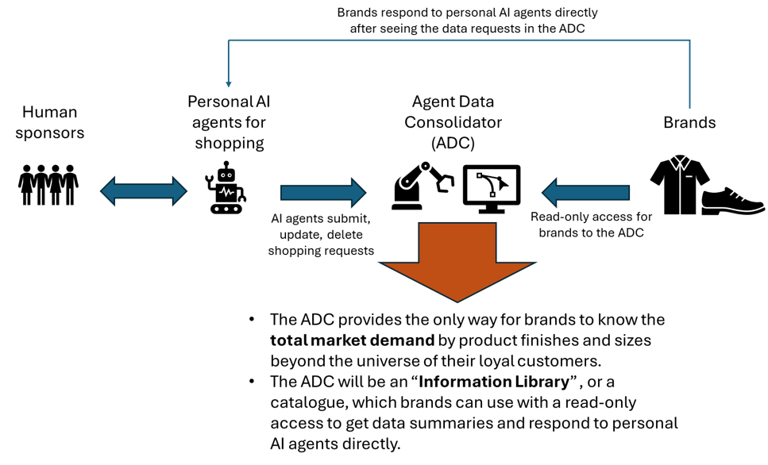
This setup is beneficial for the brands because they would be able to analyze if they are
addressing adequately the total real demand in the market with their apparel merchandise and if
they are over- or underindexed on certain product characteristics and sizes that shoppers are
looking for. Thus, the brands can deduce if their product offerings are capturing the fair share
of the total market and can react to changing aesthetics earlier than if they monitor the market
themselves via trend-spotting or industry reports (which are often published with a delayed effect).
When the ADC aggregates the data in trailing 12- or 24-month view, it allows brands to get a holistic
view of demand at the lowest hierarchy level that stems from real demand. This is the basis for
building more accurate demand forecasts. Brands can also localize demand (down to a postal (zip) code)
and start uncovering location-driven aesthetics that human trend-spotters have missed to register.
Moreover, brands can also unload the guesswork from their merchandising teams on the allocation of
exact product finishes. All in all, the ADC will be of big service to the brands.
If we try to survey the land for some analogous consumer systems of record that have been developed
and sit between individual consumers and businesses, we could examine the case of Pix, launched in
2020 by the Central Bank of Brazil15 because of its (1) size, (2) real-time operations, and (3)
central function. Pix is system of payment transfers (and an instant payment platform) that
facilitates transactions from person-to-person, person-to-business, business-to-business,
person-to-government, and business-to-government payments. It processed 6 billion transactions
per month in 202416, exceeding all credit and debit card transactions combined. Its scope is so
comprehensive that it is currently used by 76% of the population and is the most frequently payment
platform used by 46%17. All of this is very impressive considering that it evolved only within a
5-year window. Pix assigns its users aliases (similar to how the personal AI agents will have
IDs in the ADC), which are portable and the users’ information stored in the database is
encrypted and protected by law15.
Photo credit: Inclusive Money article here
This example illustrates how a collectively-exhaustive system can seamlessly function even when it comes to the most sensitive exchange for humanity – money. Pix can only inspire the future design for the ADC, which would not even handle any transactions, but only serve as a centralized collection point for shopping requests.
--------
15 Staff article "Pix", Central Bank of Brazil, May 2026.
16 Grant, Wesley, "Pix: Most used payment method in Brazil", Payments Journal, January 2025.
17 Verdélio, Andreia, "Brazil’s Pix Set Records, Surpassing Credit Card Transactions Last Year", Agência Brasil, December 2024.
VI. Futures timeline and governance for this Theory of Change
If we try to imagine what a futures timeline for the emergence, adoption, and harnessing of the capabilities of the personal AI agents and the creation of the ADC would look like, I would like to offer a 10-year timeline (Figure 5) that provides a reasonable technological horizon before we see the transformational effects signaling improved planetary health reflected in the Sustainability reports by the apparel brands.
Figure 5: Timeline and trends for the algorithmic consumer and ADC developments
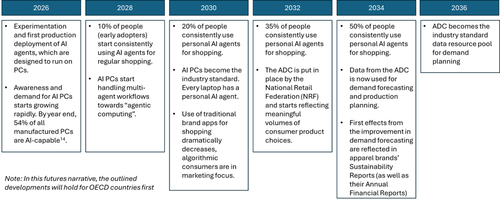
In this Theory of Change, the anticipated outcome would rest on the expectation that in 10 years’ time, at least 50% of people in OECD countries would become algorithmic consumers in order for the ADC to gain meaningful volumes of data that can be used for demand planning at the lowest level in the product hierarchy. I consider this a very plausible scenario because research shows18 that by the end of 2026, 55% of all personal computers will be AI PCs and by 2030, all PCs will be quipped with personal AI agents19, which still gives 6 more years till 2036 for humans to adapt, change habits, and start using personal AI agents for shopping on regular basis. If we model this sociotechnical trend to match the pace at which consumers switched to ecommerce shopping20, we see that within any six years, volume of ecommerce has at least doubled with growth in the early years 2014-2020 reaching 400%. If we see similar rates of conversion to apparel shopping via personal AI assistants, the ADC will certainly reach critical mass volume of data to fulfil its purpose.
--------
18 Press release, "Gartner Says AI PCs Will Represent 55% of Worldwide PC Market by the End of 2026", Gartner Research, August 2025.
19 Alvi, Kazim Ali, "All PCs shipped by 2030 will be powered by AI, suggests report", Windows Report, August 2024.
20 Shukla, Babita, "E-Commerce Adoption and Consumer Behavior", Stallion Journal for Multidisciplinary Associated Research Studies,, vol 2, issue 1, pp. 16-20, February 2023.
Returning to the analogous case of Pix, one huge factor for its success is rooted in its
governance model where the Central Bank of Brazil is the sponsoring body for the implementation
and the security guardrails, providing government-mandated support for adoption. With the most
eminent government financial institution behind this initiative, Pix rides on the principles of
responsible innovation done for public good and not necessarily for private profit. Pix shows
that where the governance model is situated is a key element for the success of a massive data
centralized system.
In the case of the ADC, the governance model will not be situated within a government body (as
no government has direct interest to refine the demand planning practices of private apparel
companies), but it could find sponsorship from influential non-government, non-profit organizations.
One such organization in the United States could be the National Retail Federation (NRF), the
world’s largest retail trade organization, whose motto is that “Every day, we passionately
stand up for the people, policies and ideas that help retail succeed21”. The NRF is traditionally
focused on career-facilitation and community-building within the retail industry so the ADC
could align with the NRF’s purpose to be a connector between people and brands, this time for
demand planning.
NRF in "About Us":

The NRF can provide the trade connections and thought leadership for the creation of the ADC as an industry solution for demand planning, but it will not be successful if it does not partner with a large tech organization for the technical buildout and management of the ADC. There are multiple tech implementation vendors (such as Accenture or IBM) that could operationalize the ADC and they could be chosen through a comprehensive RFP selection process. But as with any new business venture, the core question will revolve around financing. Finding financing for the creation of the ADC could be a whole business imitative on its own, but here is where the NRF could use its influential, industry-gluing status to create a co-funded call for action in which the retail companies in the industry raise and allocate the funds for the ADC creation as they will be the biggest beneficiaries in this Big Data project (Figure 6).
Figure 6: The operational model for the ADC
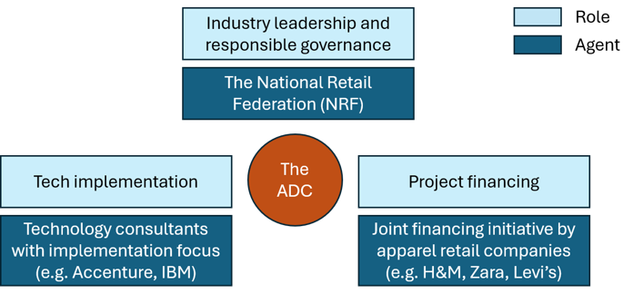
Thus, the ADC will be a 3-way venture because neither side has competency to create the ADC alone. This will bring complexity and execution risks in this sociotechnical system, which is why the ADC should be understood as a high-effort solution which will necessitate considerable planning, alignment, and resource-allocation between the agents. The ultimate governance of it will sit with the NRF because the NRF will be the least biased agent in the system and can centrally manage this industry solution.
--------
21 Landing page, "National Retail Federation", May 2026.
VII. Planetary Benefits
Once apparel retail companies start using data from the ADC for demand planning refinement,
a reasonable target for improvement in demand forecasts could be 3-10% given that the most
analytically advanced companies in the sector (e.g. Levi’s) already have internal benchmark
thresholds of 92% demand accuracy in aggregate.
Such improvement will first show up in the inventory turnover business metric as excess production
will be reduced and the dollar value of the average inventory held will decrease. A 10% reduction
in average inventory can translate to 11% increase in inventory turnover, which, over 365 days,
would mean that the company will hold 36.5 fewer days of inventory.

Once the company reduces its cost for holding inventory by 36.5 days, this frees up working capital
to be deployed elsewhere. In Sustainability reports this is often described as “operational efficiency”
or “resource efficiency”.
The decrease in average inventory would also translate to less markdown or season-ending sales and a
smaller number of items flowing down to Off-Price resellers (e.g. TJ Maxx). Such “product tail
reduction” would curb the impulse of everyday consumers to buy items they don’t need from markdown
sales and would decrease transportation and handling costs to ship remaining unsold items to Off-Price
resellers. In both cases, this will be an indirect win for the environment.
A decrease in average inventory would also impact another closely related metric, unsold inventory,
which oftentimes sits as a thorn for apparel retail companies because they need to figure out what
to do with it if markdown sales or Off-Price channel flushing does not work out. In many cases,
unsold inventory is shipped to landfill sites or incarceration depots for destruction, which may
take decades to fully degrade, piling waste on the environment.
The most egregious case example in the apparel industry on this metric occurred in 2018 at H&M22,
which accumulated $4B worth of unsold inventory, representing 18% of its annual sales. This
accumulation was attributed to a long supply chain that overproduced items that customers no
longer found desirable or fashionable, which was further aggravated by the fast-paced change of
trends in social media, a rising outlet for personal fashion inspiration. To dissolve the inventory,
H&M initiated deep markdowns, up to 47%, across stores globally. Consumers were bombarded with items
they did not necessarily need, but even this was not enough. To offload excess stock more discreetly,
H&M created a discount outlet brand, AFOUND, which was later sold to Secret Sales in 2024. AFOUND
allowed H&M to push unsold goods away from their main retail stores.

Photo credit: Cover photo from "The BoF Podcast: Inside H&M’s $4 Billion Inventory Challenge", which can be listeneted to here
On the opposite spectrum, understanding total market demand by location (postal code in the ADC)
would help reduce product stockouts in a given geography. The benefit of this is that emergency
shipments would be greatly reduced or eliminated.
Another metric that will be directly positively impacted by improved demand planning and that is
frequently found in ESG reports is carbon emissions as there will be less such emissions to ship
and transfer lower number of containers with raw materials and finished goods. Along with that,
we will see a decrease in water usage, chemical waste, and energy consumption in the manufacturing
process as companies reduce overproduction.
--------
22 Tabansi, Obi, "Why The $4B H&M's Inventory Failure Happened", Supply Chain Nuggets, August 2025.
All of the impacts discussed earlier reduce the current environmental strain on the planet and lead to a more sustainable future (Figure 7).
Figure 7: Impact of better demand planning on business and ESG metrics
In Sustainability reports of major apparel retail companies, overproduction is not a metric of
its own as companies tend to report their sustainability metrics as values derived from multiple
initiatives and contributors. However, H&M states that it is decarbonizing its business through
“digital tools, better forecasting, smarter inventory23”, which points to demand planning as a
lever that companies can use to achieve that.
Most of the time, as sales grow every year (the goal of any business enterprise), demand
forecasts in the most sought-after product categories will be higher every cycle. However,
the nuance in this proposal is that demand planning with data from the ADC can help forecasting
teams avoid overestimating the quantities. This shield from overestimation is the exact planetary
relief that can be realized by running more sparing supply chain operations on global scale.
--------
23 Editorial, "Inside H&M’s 2024 Sustainability Report: A Closer Look", The Digital Hive, May 2026.
VIII. Risks and limitations
This Theory of Change depends not only on large-scale sociotechnical trends and developments,
but also on specific short- to medium-term business decisions that I find the need to discuss.
The risk of overproduction discussed in this proposal does not solely come from situations where
demand planning is overestimating future demand but can also come from other factors that include
long production lead times, minimum order quantities, fashion-risk taking, and overall merchandizing
strategy.
If the apparel retail company is running on long production lead times, it has to forecast demand
oftentimes 6 to over 12 months in advance24. This is the case with most traditional apparel
companies (currently holding 82% sales share in the global market25) because their supply chain
is not built for quick and cheap, reactive, capsule-style creations in the way fast fashion is.
If we look at Levi’s for reference, the supply chain there is on the longer side at 14 months
(since denim production requires more processing time than other fabrics) and the reality is that
there are multiple external forces that can throw off the process that on paper has been designed
to run smoothly26. Such external circumstances have in the past included port congestions, labor
shortages at operational sites, and shortages in warehousing capacities in various distribution
centers. So in practice, lead times in the apparel retail industry are and would remain long
(longer than 6 months), which then prompts demand planning teams to add a layer of “safety volume”
to the forecasts because of optimistic forward-looking corporate plans and expectations.
This is where the ADC can help alleviate the “unknown factor” in future demand by offering some
signals for future demand (grounded in consumer intentions) if the personal AI agents are able to
shop around future calendar events in their human sponsors’ schedules. So even if long lead times
often predispose overproduction, the ADC can still help mitigate that risk to slightly lower
overproduction.
Another operational constraint leading to overproduction is the minimum order quantities in which
apparel retailers have no choice but to sometimes order above their forecasted quantities. This
could be especially detrimental for the smaller consumer groups that this paper has discussed are
excluded from the product portfolios, such as the Plus Size consumer. Sometimes the choice there
is to either overproduce something or not produce it at all. This is where the ADC can be helpful
again because if there is a signal for unmet demand, then more apparel companies would choose to
produce rather than not, believing that actual demand will exceed the minimum order quantity.
Another risk for overproduction is when apparel companies play fashion-risk taking in which they
design and produce a fashion line that is not typical for their portfolio. The extenuating factor
here is that oftentimes such experimental lines involve small quantities or capsule collections,
which, in aggregate, do not command a massive production operation. The ADC could also be helpful
in such cases of fashion-risk taking by guiding the fashion designers to peg the experimentation
process around product attributes (fabric, silhouette, finish, buttons, patterns, etc) that
consumers are requesting in greater number than others.
In parallel to the above, another merchandising strategy that propels apparel retail companies
towards overproduction is when the strategy is to emphasize variety for the consumer. In such
cases, there will be a long tail of products that will get produced but never bought. Here, the
ADC can again be helpful as input in the strategy formulation to rationalize (or cap) the number
of product items planned.
In sum, overproduction in the apparel retail industry can be conceptualized as a function of
analytical demand forecasting, lead times, minimum order quantities, and merchandising strategy.

Data from the ADC introduced in this proposal can directly help companies sharpen their analytical demand forecasts and the effect will be enhanced when the ADC data is used and weighed in the context of the other supply chain constraints and the overall merchandising strategies. This will produce a demand plan that combines both real marketplace demand and the company’s own constraints and strategies. The net result will be a decrease in overproduction, sparing unnecessary strain for the environment.
--------
24 White Paper: AlNowaiser, Leena; Chien, Derrick; Khan, Zarish; Roe, Jemima; Zotova, Veronika, "When Fast Isn't Flexible", Frontiers in Retail, 2025.
25 Roush, Kate, "The Fast Fashion Intersection: Navigating Sustainability and Global Trade in a Post-Pandemic World", The St. Andrew’s Economist, February 2025.
26 Editorial, "Levi Strauss adjusts its inventories after logistics losses", Opportimes, January 2023.
IX. 3 Future Frames: Scenarios, Situations, Stuff
The desired long-term outcome that this paper rests on is planetary health. Now that we have
outlined:
1) the current practice of demand planning for apparel goods with the specific area where
it can be improved,
2) the emergence of the futures new persona (the algorithmic consumer),
3) the creation of the futures new tool (the Agent Data Consolidator),
4) the futures timeline for this Theory of Change, and
5) the positive planetary effects that it can bring,
I will use the “3 Future Frames”27 to situate this entire theory into practical illustration
from the point of view of the individual consumer (myself in this case).
Figure 8: The 3 Future Frames - personalized example
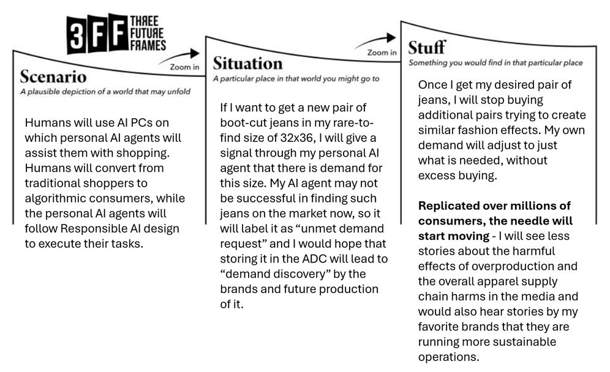
If we can scale this personal example to comparable future frames for millions of other consumers,
I am a firm believer that we could achieve the goals laid out in this futures narrative. What it
takes is equal portions:
(1) Technology solutionism (through the ADC) with a 3-way governance model,
(2) Responsible AI design (for the personal AI agents), and a
(3) Socioeconomic transformation
in which the individual consumers switch to agentic commerce and the business analytics community
alters the current methodology for demand forecasting utilizing the granularity of data available.
The latter third point may be the toughest challenge because it rests on broader socioeconomic
trends in which established habits and norms have evolve to new paradigms.
--------
27 Willshire, John and Phillips, Robert; "Three Future Frames - an intuitive framework for design futures", Smithery, 2025.
X. Main Audience for this proposal
This proposal would be of utmost interest to the following groups:
- Demand planning leaders at apparel retail companies
- Supply chain and operations leaders at apparel retail companies
- Demand planning teams and supporting personnel
- National Retail Federation (NRF) community program developers
- Agentic AI developers (to consider the Responsible AI design requirements)
- Technology solutionists who recognize the merits of the ADC
- Technology consultancies who can use this strategic blueprint for the creation of the ADC
The key beneficiaries of this proposal would not only be the apparel retail companies (which can improve their P&L through leaner supply chains) but humanity as a whole as the planetary resources will be used more sparingly for industrial production and consumption.
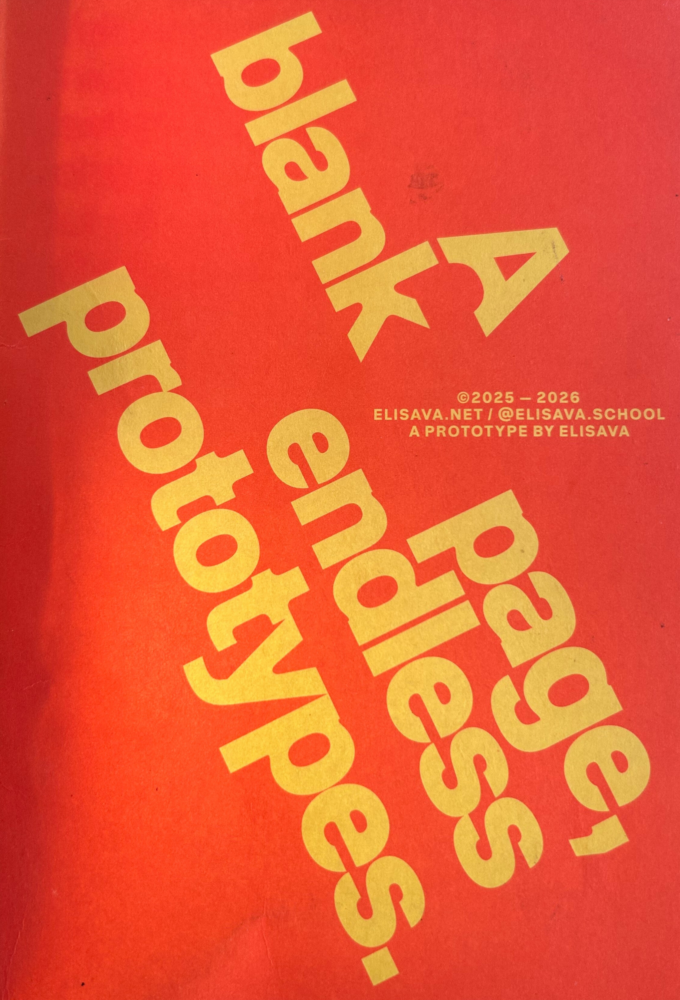
XI. Summary
This proposal developed a futures narrative in which agentic AI can be used to help
Predictive AI create more accurate demand planning forecasts for apparel goods. With
current demand forecasts achieving best-in-class accuracy of 92%, the push will be to
sharpen demand planning by additional 3-10% to further cut overproduction and excessive supply.
This will produce a measurable effect on planetary health by sparing overproduction and creating
a leaner supply chain.
The timeline in this futures narrative spans the next 10 years (2026-2036) and the proposed results
will be achieved through a futures chain of events that will see the rise of a new persona
(the algorithmic consumer), a new tool (the Agent Data Consolidator), and a new sociotechnical
paradigm in which 50% of consumers in OECD countries would switch to using personal AI shopping
agents to fulfill their intentional shopping needs.
For the rise of the new personal, AI developers will need to ensure that a certain set of
Responsible AI principles is embedded in each personal AI agent. For the new tool creation,
the Agentic Data Consolidator, an industry-wide project has to be put in place to raise financing,
govern, and realize this vision. The ADC would be built on the principles of technology solutionism
capturing human behavior (apparel shopping needs) and aggregating that data into production signals
for apparel companies to use in demand planning. The differentiating aspect of the ADC is the fact
that it represents total market demand and can highlight blind spots that brands have missed noticing
and planning for, which in turn will give visibility to underserviced groups, such as the Plus Size
consumers. The ADC will avoid becoming a surveillance tool by taking only attribute information and
no personal identifiable data. Analogous examples, such as Brazil’s Pix payment system, already
exist to serve as guidance and inspiration.
Once brands can incorporate the data from the ADC into their demand planning, they can create more
accurate plans at the lowest hierarchy product level and address needs by geography. This will
translate into reductions in environmentally harmful practices in the supply chains and will relieve
the planet from unnecessary production strain. Thus, this proposal offers a chance for humanity to
leverage the advent of agentic AI for the benefit of the planet.